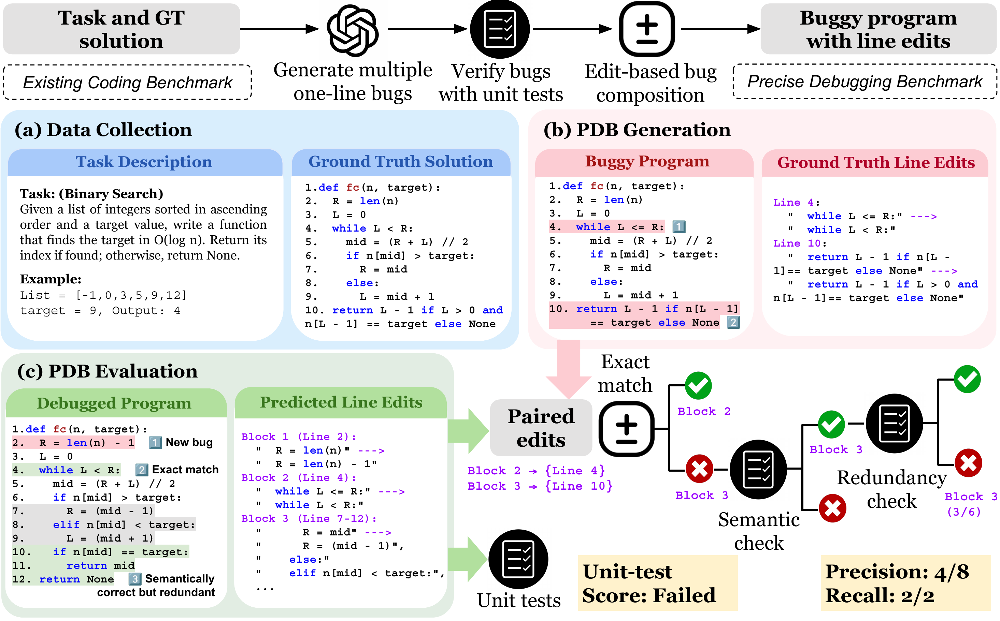
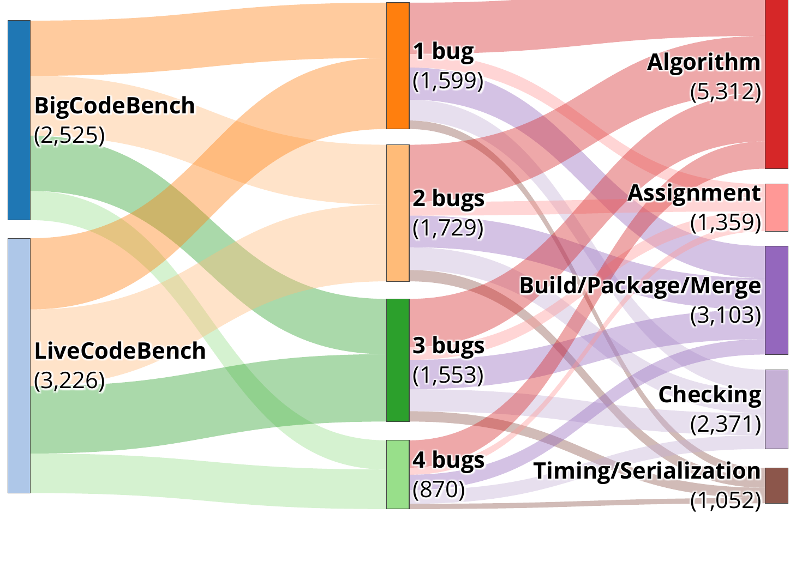
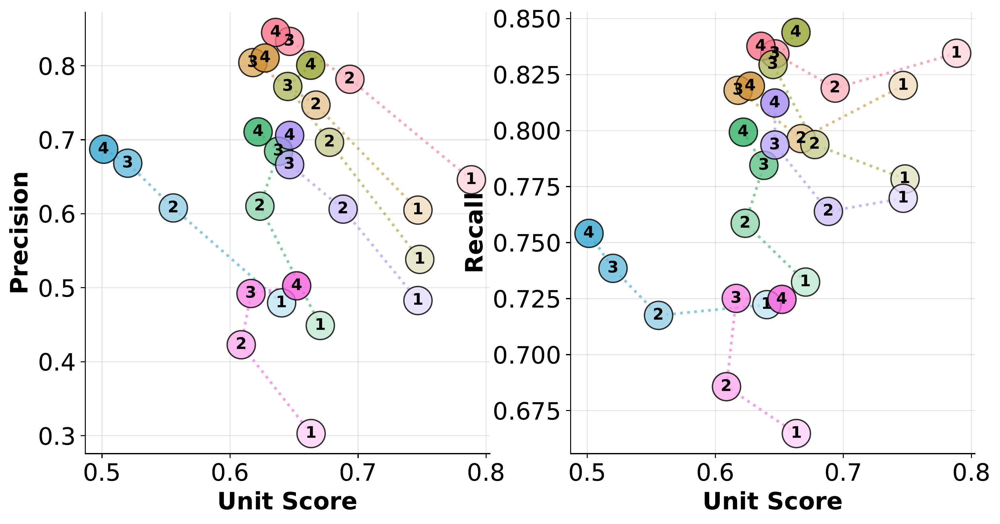
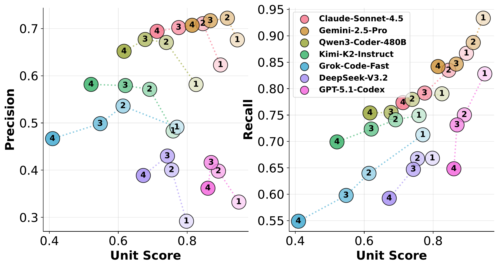
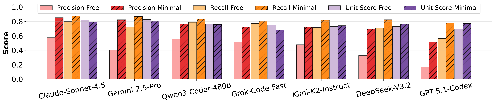
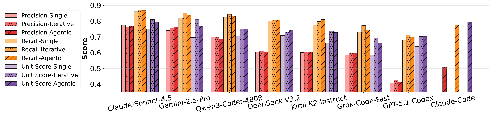
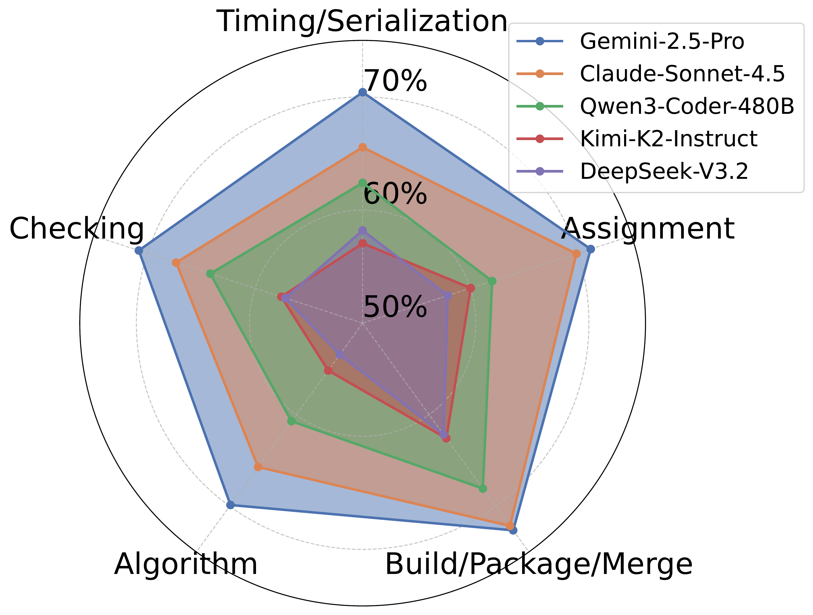

Unlike code completion, debugging requires localizing faults and applying targeted edits. We observe that frontier LLMs often regenerate correct but over-edited solutions during debugging. To evaluate how far LLMs are from precise debugging, we introduce the Precise Debugging Benchmarking (PDB) framework, which automatically converts any coding dataset into a debugging benchmark with precision-aware evaluation.
PDB generates buggy programs by synthesizing verified atomic bugs and composing them into multi-bug programs. We define two novel metrics, edit-level precision and bug-level recall, which measure how many necessary edits are made and how many bugs are resolved. We release two evaluation benchmarks: PDB-Single-Hard (5,751 single-line bug examples) and PDB-Multi (256 contiguous 2–4 line bug examples).
Experiments show that frontier models, such as GPT-5.1-Codex and DeepSeek-V3.2-Thinking, achieve unit-test pass rates above 76% but precision at or below 45%, even when explicitly instructed to perform minimal debugging. Iterative and agentic debugging strategies do not substantially improve precision or recall, highlighting the need to rethink post-training pipelines for coding models.
We release two evaluation sets built with the PDB generation and evaluation pipeline, both sourced from two existing coding benchmarks: BigCodeBench (API usage) and LiveCodeBench (algorithmic reasoning).

PDB-Single-Hard data distribution: 5,751 examples across source benchmark, bug count (1–4), and bug category.
Scatter plots below: hover for exact numbers. Full tables are on the Leaderboard.

Bug-count breakdown on BigCodeBench.

Bug-count breakdown on LiveCodeBench.

Model performance under minimal-debug vs. freeform prompting.

Model performance under iterative and agentic setups.

Recall distribution over the five bug categories.
@inproceedings{zhu2026pdb,
title = {Precise Debugging Benchmark: Is Your Model Debugging or Regenerating?},
author = {Zhu, Wang Bill and Chai, Miaosen and Wang, Shangshang and Liu, Yejia and
Bian, Song and Dong, Honghua and Neiswanger, Willie and Jia, Robin},
booktitle = {Findings of the Association for Computational Linguistics: ACL 2026},
year = {2026},
}